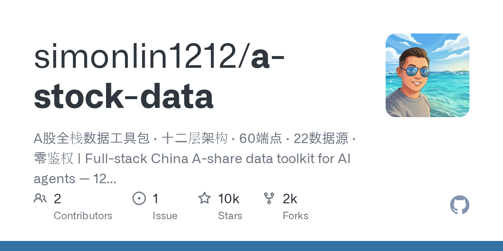

02 GitHub
simonlin1212/a-stock-data
A주 데이터 22개 소스를 한 파일로 묶었다
★ 9,626PythonApache-2.0 사내 사용 가능릴리스 v3.8.0 (09.05)최근 활동 09.05테스트 있음예제 없음AGENTS.md 없음

이 저장소는 A주 데이터를 많이 다루는 조사 업무에 초점을 둔다. 핵심은 데이터 수집 코드보다 사용 방식이다. AI 코딩 도구에 파일 하나를 넣으면 여러 데이터 소스를 뒤에서 골라 쓰게 한다. 데이터 소스가 막히거나 형식이 달라도 사용자는 같은 질문 흐름을 유지할 수 있다.
무엇을 하는 물건인가
이 저장소는 A주 데이터 수집 규칙을 한 파일로 감싼 도구 모음이다. 시세, 재무, 뉴스, 공시, 지수, 옵션, 시장 자금 흐름을 한자리에 모은다. 사용자는 복잡한 인증 헤더나 사이트별 호출 규칙을 외울 필요가 없다. 여러 창구가 있는 민원 업무를 한 접수창으로 바꿔 놓은 형태와 비슷하다.
스펙과 도입 조건
- 언어는 Python이다.
- 설치 형태는 SKILL.md 파일을 AI 코딩 도구의 skill 디렉터리에 넣는 방식이다.
- Claude Code, Codex, OpenClaw와 호환된다고 밝혔다.
- 실행에는 mootdx, requests, pandas, stockstats, numpy, baostock, xlrd, openpyxl 같은 파이썬 의존성이 필요하다.
- 대부분의 데이터 소스는 별도 가입이나 API 키가 필요 없다.
- iwencai 자연어 검색만 API 키가 필요하다.
- 라이선스는 Apache-2.0이다.
- 최신 릴리스는 v3.8.0이며 2026-09-05에 공개됐다.
이럴 때 쓰면 좋다
- 리서치 인력이 종목 코드, 재무, 뉴스, 공시를 번갈아 찾는 반복 조사를 AI 보조도구로 줄이고 싶을 때 적합하다.
- 데이터팀이 A주 지표를 규정 문서나 보고서 초안에 붙일 때 소스별 호출 규칙을 통일하고 싶다면 유용하다.
- 시장감시나 투자지원 부서가 지수 구성 종목, 자금 흐름, 해제 일정 같은 데이터를 빠르게 교차 확인할 때 도움이 된다.
핵심 기능
- 22개 데이터 소스를 12개 계층으로 묶어 A주 데이터를 조회한다.
- 실시간 시세, K선, 재무, 뉴스, 공시, 자금 흐름, 옵션, 지수 달력을 다룬다.
- 주 소스가 막히면 예비 소스를 쓰는 강등 전략과 주의 목록을 함께 제공한다.
왜 지금 주목받나
이 도구는 AI 코딩 도구 안에서 바로 쓸 수 있는 형태를 택했다. 단일 파일에 구조화된 Markdown과 Python 코드를 같이 넣어 배포와 재사용이 쉽다. 인증이 거의 필요 없고, 대부분의 데이터 소스를 HTTP나 TCP로 직접 호출한다. 중간 래퍼를 줄여서 문제가 생길 지점을 줄였다고 설명한다.
이번 버전은 지수 데이터와 거래소 공식 백업 소스를 더했다. 중증지수와 국증지수의 구성 종목과 비중, 지수 가치평가, 선전거래소 거래 달력, 상하이·선전의 공식 신용거래 백업, 베이징거래소 시세 백업을 추가했다. 지수 비중은 공식 공표 날짜를 보존하고, 일부 값은 원천에 없는 항목을 0으로 채우지 않는다고 못 박았다. 실무에서 가장 위험한 오해인 공백값과 0값 혼동을 줄이려는 설계다.
| 계층 | 예시 데이터 |
|---|---|
| 시세층 | K선, 5단계 호가, 실시간 시세, 지수, ETF |
| 리포트층 | 개별 종목 리포트, 산업 리포트, PDF 다운로드, EPS 전망 |
| 신호층 | 강세 종목, 테마 사유, 북향 자금, 자금 흐름, 상위 거래 명단 |
| 자금·칩층 | 신용거래, 대량매매, 주주 수, 배당, 120일 자금 흐름 |
| 뉴스층 | 개별 종목 뉴스, 속보, 글로벌 뉴스 |
| 지수·달력층 | 지수 구성 종목, 비중, 배당수익률, 공식 거래 달력 |
사내 도입 체크
- 대부분의 데이터는 무인증으로 쓰지만, iwencai 자연어 검색은 외부 API 키가 필요하다.
- 여러 공개 사이트에 직접 요청을 보낸다. 질의 로그와 조회 대상이 외부로 나갈 수 있어 네트워크 정책 확인이 필요하다.
- 유지보수 주체는 개인 개발자다. 릴리스는 활발하지만 장기 운영 책임 범위는 확인이 필요하다.
- 일부 데이터 수집 기능은 상용 데이터 벤더나 증권 단말로 대체할 수 있지만, AI 코딩 도구와의 즉시 결합 방식은 차이가 있다.
주요 용어
원문 정보
제목: simonlin1212/a-stock-data
최근 활동: 2026.09.05